Exploratory Data Analysis
Adapted for ForestGEO from R for Data Science, by Hadley Wickham and Garrett Grolemund
Mauro Lepore
2018-07-09
Source:vignettes/siteonly/eda.Rmd
eda.RmdHere I literally reproduce the section Exploratory Data Analysis of the book R for Data Science (http://r4ds.had.co.nz/), by Hadley Wickham and Garrett Grolemund – except for the examples and some text, which I changed to more strongly engage ecologists from ForestGEO (if anything here is poorly written it’s surely mine).
Introduction
This article will show you how to explore your data with general purpose tools, mostly from the tidyverse (https://www.tidyverse.org/). This is a good place to start, before you learn the specific tools from the fgeo package (https://forestgeo.github.io/fgeo/). For an exploratory data analysis with fgeo see Get Started.
You’ll learn to explore your data systematically, using modern and powerful tools for visualization and transformation. An exploratory data analysis is an iterative process that aims to use data and some research questions to learn something that can help you refine those questions and move forward along the learning spiral.
If you are new to the tidyverse, you may feel a little frustrated at the beginning, but quickly your effort will pay-off. The tools in the tidyverse are powerful, relatively easy to use and consistent; so once you learn some, you will learn most other tools intuitively.
library(tidyverse)
#> -- Attaching packages ---------------------------------- tidyverse 1.2.1 --
#> v ggplot2 2.2.1 v purrr 0.2.5
#> v tibble 1.4.2 v dplyr 0.7.6
#> v tidyr 0.8.1 v stringr 1.3.1
#> v readr 1.1.1 v forcats 0.3.0
#> -- Conflicts ------------------------------------- tidyverse_conflicts() --
#> x dplyr::filter() masks stats::filter()
#> x dplyr::lag() masks stats::lag()The data we will use is a public dataset of trees censused in a forest plot in Luquillo, in Puerto Rico. Those data are available in the data set luquillo_stem_random from the data-package fgeo.data (https://forestgeo.github.io/fgeo.data/).
Style
The tidyverse style guide
The code style I use here follows the tidyverse guide (http://style.tidyverse.org/).
Good coding style is like correct punctuation: you can manage without it, butitsuremakesthingseasiertoread.
Combining multiple operations with the pipe %>%
Often I combine multiple operations with the pipe %>% because it makes the code considerably more readable.
[The pipe] focuses on the transformations, not what’s being transformed, which makes the code easier to read. You can read it as a series of imperative statements: group, then summarise, then filter. As suggested by this reading, a good way to pronounce %>% when reading code is “then”.
Behind the scenes,
x %>% f(y)turns intof(x, y), andx %>% f(y) %>% g(z)turns intog(f(x, y), z)and so on. You can use the pipe to rewrite multiple operations in a way that you can read left-to-right, top-to-bottom.
Working with the pipe is one of the key criteria for belonging to the tidyverse. The only exception is ggplot2: it was written before the pipe was discovered.
–- R for Data Science (http://r4ds.had.co.nz/transform.html)
Questions and Definitions
Questions
To start exploring your data, you can generally ask these questions:
- What type of variation occurs within my variables?
- What type of covariation occurs between my variables?
Definitions
A variable is a quantity, quality, or property that you can measure.
A value is the state of a variable when you measure it. The value of a variable may change from measurement to measurement.
An observation is a set of measurements made under similar conditions (you usually make all of the measurements in an observation at the same time and on the same object). An observation will contain several values, each associated with a different variable. I’ll sometimes refer to an observation as a data point.
Tabular data is a set of values, each associated with a variable and an observation. Tabular data is tidy if each value is placed in its own “cell”, each variable in its own column, and each observation in its own row.
Variation is the tendency of the values of a variable to change from measurement to measurement.
Variation
Every variable varies with a particular pattern, and that pattern may be insightful. To understand the variation pattern of a variable we can visualize the distribution of the variables’ values. The best way to visualize a variable’s distribution depends on whether the variable is categorical or continuous.
The stem dataset has both, categorical and continuous variables. In R, categorical variables are usually stored as character strings (<chr>) or factors (<fctr>), and continuous variables are stored as integers (<int>) or doubles (<dbl>).
stem is a tibble. A tibble is a subclass of dataframe. But compared to regular dataframes tibbles are optimized to handle large data; and they print more information and nicer.
class(stem)
#> [1] "tbl_df" "tbl" "data.frame"
stem
#> # A tibble: 7,944 x 19
#> treeID stemID tag StemTag sp quadrat gx gy MeasureID
#> <int> <int> <chr> <chr> <chr> <chr> <dbl> <dbl> <int>
#> 1 104 143 10009 10009 DACEXC 113 10.3 245. 143
#> 2 119 158 100104 100104 MYRSPL 1021 183. 410. 158
#> 3 180 222 100171 100095 CASARB 921 165. 410. 222
#> 4 180 223 100171 100096 CASARB 921 165. 410. 223
#> 5 180 224 100171 100171 CASARB 921 165. 410. 224
#> 6 180 225 100171 100174 CASARB 921 165. 410. 225
#> 7 602 736 100649 100649 GUAGUI 821 149. 414. 736
#> 8 631 775 10069 10069 PREMON 213 38.3 245. 775
#> 9 647 793 100708 100708 SCHMOR 821 143. 411. 793
#> 10 1086 1339 10122 10122 DRYGLA 413 68.9 253. 1339
#> # ... with 7,934 more rows, and 10 more variables: CensusID <int>,
#> # dbh <dbl>, pom <chr>, hom <dbl>, ExactDate <dbl>, DFstatus <chr>,
#> # codes <chr>, countPOM <dbl>, status <chr>, date <dbl>By default, tibbles print a few rows only; to print more rows use:
You can always convert a tibble into a regular dataframe.
For alternative views try:
# informative and prints nice
str(stem)
#> Classes 'tbl_df', 'tbl' and 'data.frame': 7944 obs. of 19 variables:
#> $ treeID : int 104 119 180 180 180 180 602 631 647 1086 ...
#> $ stemID : int 143 158 222 223 224 225 736 775 793 1339 ...
#> $ tag : chr "10009" "100104" "100171" "100171" ...
#> $ StemTag : chr "10009" "100104" "100095" "100096" ...
#> $ sp : chr "DACEXC" "MYRSPL" "CASARB" "CASARB" ...
#> $ quadrat : chr "113" "1021" "921" "921" ...
#> $ gx : num 10.3 182.9 164.6 164.6 164.6 ...
#> $ gy : num 245 410 410 410 410 ...
#> $ MeasureID: int 143 158 222 223 224 225 736 775 793 1339 ...
#> $ CensusID : int 1 1 1 1 1 1 1 1 1 1 ...
#> $ dbh : num 115 16 17.2 11.7 80 19.4 24.1 100 146 165 ...
#> $ pom : chr "1.2" "1.3" "1.3" "1.3" ...
#> $ hom : num 1.2 1.3 1.3 1.3 1.3 1.3 1.3 1.3 1.3 1.3 ...
#> $ ExactDate: num 7831 8609 8610 8610 8610 ...
#> $ DFstatus : chr "alive" "alive" "alive" "alive" ...
#> $ codes : chr "MAIN;A" "MAIN;A" "SPROUT;A" "SPROUT;A" ...
#> $ countPOM : num 1 1 1 1 1 1 1 1 1 1 ...
#> $ status : chr "A" "A" "A" "A" ...
#> $ date : num NA NA NA NA NA NA NA NA NA NA ...
# like str() but shows as much data as possible
glimpse(stem)
#> Observations: 7,944
#> Variables: 19
#> $ treeID <int> 104, 119, 180, 180, 180, 180, 602, 631, 647, 1086, 1...
#> $ stemID <int> 143, 158, 222, 223, 224, 225, 736, 775, 793, 1339, 1...
#> $ tag <chr> "10009", "100104", "100171", "100171", "100171", "10...
#> $ StemTag <chr> "10009", "100104", "100095", "100096", "100171", "10...
#> $ sp <chr> "DACEXC", "MYRSPL", "CASARB", "CASARB", "CASARB", "C...
#> $ quadrat <chr> "113", "1021", "921", "921", "921", "921", "821", "2...
#> $ gx <dbl> 10.31, 182.89, 164.61, 164.61, 164.61, 164.61, 148.9...
#> $ gy <dbl> 245.36, 410.15, 409.50, 409.50, 409.50, 409.50, 414....
#> $ MeasureID <int> 143, 158, 222, 223, 224, 225, 736, 775, 793, 1339, 1...
#> $ CensusID <int> 1, 1, 1, 1, 1, 1, 1, 1, 1, 1, 1, 1, 1, 1, 1, 1, 1, 1...
#> $ dbh <dbl> 115.0, 16.0, 17.2, 11.7, 80.0, 19.4, 24.1, 100.0, 14...
#> $ pom <chr> "1.2", "1.3", "1.3", "1.3", "1.3", "1.3", "1.3", "1....
#> $ hom <dbl> 1.20, 1.30, 1.30, 1.30, 1.30, 1.30, 1.30, 1.30, 1.30...
#> $ ExactDate <dbl> 7831, 8609, 8610, 8610, 8610, 8610, 8611, 7829, 8611...
#> $ DFstatus <chr> "alive", "alive", "alive", "alive", "alive", "alive"...
#> $ codes <chr> "MAIN;A", "MAIN;A", "SPROUT;A", "SPROUT;A", "MAIN;A"...
#> $ countPOM <dbl> 1, 1, 1, 1, 1, 1, 1, 1, 1, 1, 1, 1, 1, 1, 1, 1, 1, 1...
#> $ status <chr> "A", "A", "A", "A", "A", "A", "A", "A", "A", "A", "A...
#> $ date <dbl> NA, NA, NA, NA, NA, NA, NA, NA, NA, NA, NA, NA, NA, ...If you are in RStudio, your best option might be View(), which lets you search values and filter columns.

Visualizing Distributions
Categorical variables
A variable is categorical if it can only take one of a small set of values. To examine the distribution of a categorical variable, use a bar chart.
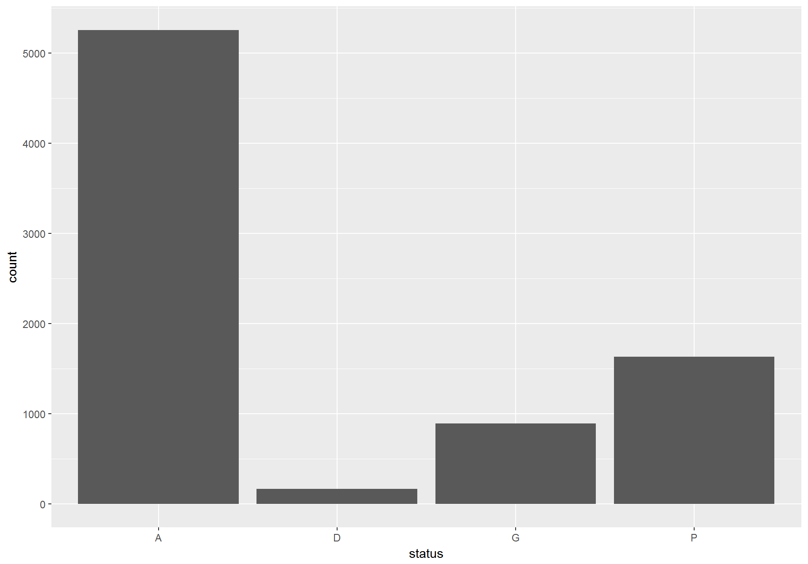
The categories A, D and M, of the variable status mean “alive”, “dead” and “missing” (http://ctfs.si.edu/Public/DataDict/data_dict.php).
Continuous Variables
A variable is continuous if it can take any of an infinite set of ordered values. To examine the distribution of a continuous variable use a histogram. You should always explore a variety of binwidths when working with histograms, as different binwidths can reveal different patterns.
Let’s explore dbh, which represents the stem diameter at breast height. Now we will focus on small stems; we’ll explore big stems later. And we will try bars of different widths (with binwidth) and choose one for further analyses.
small_dbh <- filter(stem, dbh < 300)
# Save data and mappings in "p" to reuse them later.
p <- ggplot(small_dbh, aes(dbh))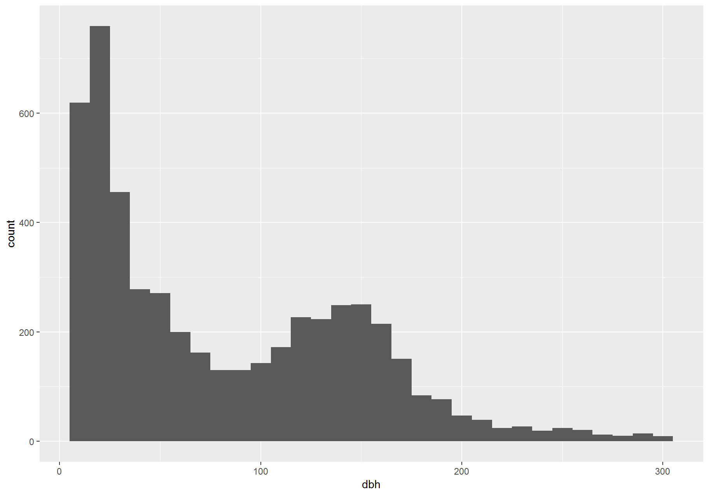
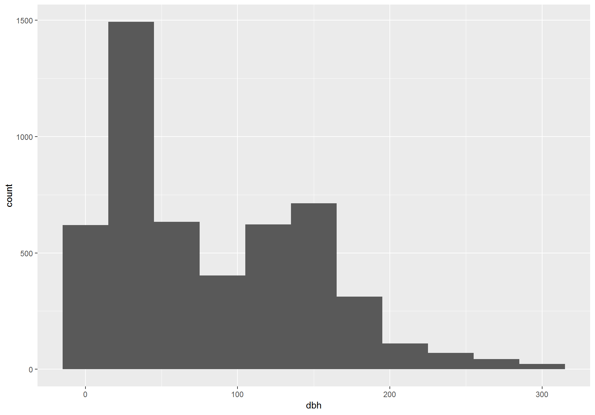
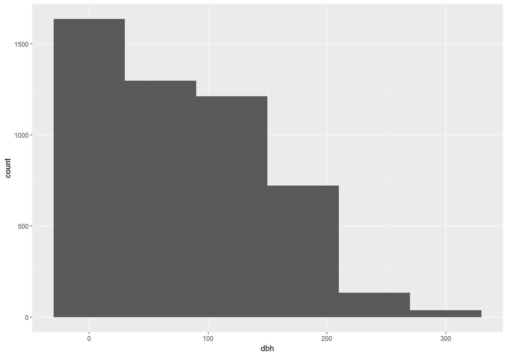
A binwidth of 30 seems useful.
To overlay multiple histograms in the same plot, geom_freqpoly() may produce clearer plots than geom_histogram() because it is easier to understand overlying lines than bars.
# Make n groups with ~ numbers of observations with `ggplot2::cut_number()`
small_cut_number <- mutate(small_dbh, equal_n = cut_number(dbh, n = 5))
p <- ggplot(data = small_cut_number, aes(x = dbh, color = equal_n))
p + geom_histogram()
#> `stat_bin()` using `bins = 30`. Pick better value with `binwidth`.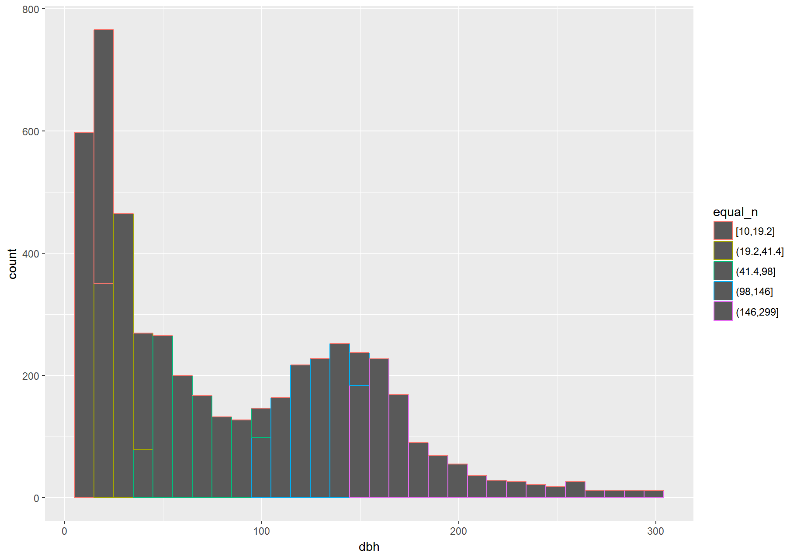
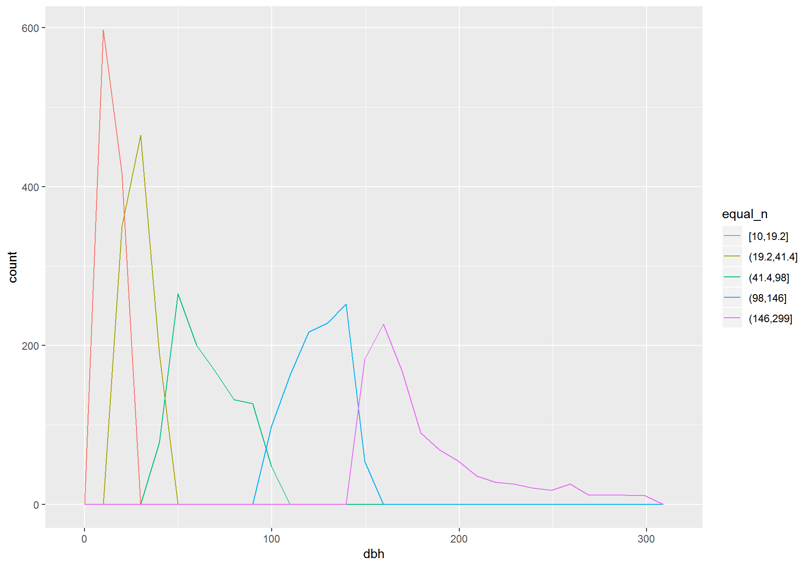
Typical and rare Values
In both bar charts and histograms, tall and short bars let us explore common and less-common values. For example, we could ask:
- Which values are the most common? Why?
- Which values are rare? Why? Does that match your expectations?
- Can you see any unusual patterns? What might explain them?
The later two plots give a good estimate of what stem diameters are most common. You can compute the same count manually, by cutting the variable dbh with ggplot2::cut_width() and then counting the unique pieces with dplyr::count().
small_dbh %>%
mutate(dbh_mm = cut_width(dbh, width = useful_binwidth)) %>%
count(dbh_mm, sort = TRUE)
#> # A tibble: 11 x 2
#> dbh_mm n
#> <fct> <int>
#> 1 (15,45] 1493
#> 2 (135,165] 714
#> 3 (45,75] 633
#> 4 (105,135] 622
#> 5 [-15,15] 619
#> 6 (75,105] 403
#> 7 (165,195] 312
#> 8 (195,225] 110
#> 9 (225,255] 70
#> 10 (255,285] 43
#> 11 (285,315] 23The most common stems are those which diameter (dbh) is between 15 mm and 45 mm.
Clustered values
In this section we will focus on the largest stems; later we will explore all stems.
Clusters of similar values suggest that subgroups exist in your data. To understand the subgroups, ask:
- How are the observations within each cluster similar to each other?
- How are the observations in separate clusters different from each other?
- How can you explain or describe the clusters?
- Why might the appearance of clusters be misleading?
The clustering, however, may be an artifact of the chosen binwidth:
p <- ggplot(large_dbh, aes(dbh))
# Left: Are these clusters meaningful?
p + geom_histogram(binwidth = 25)
# Right: Is this a more meaningful representation?
p + geom_histogram(binwidth = 100)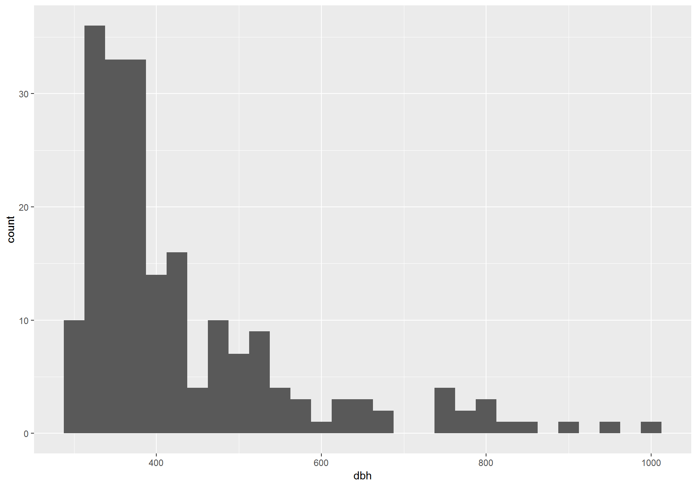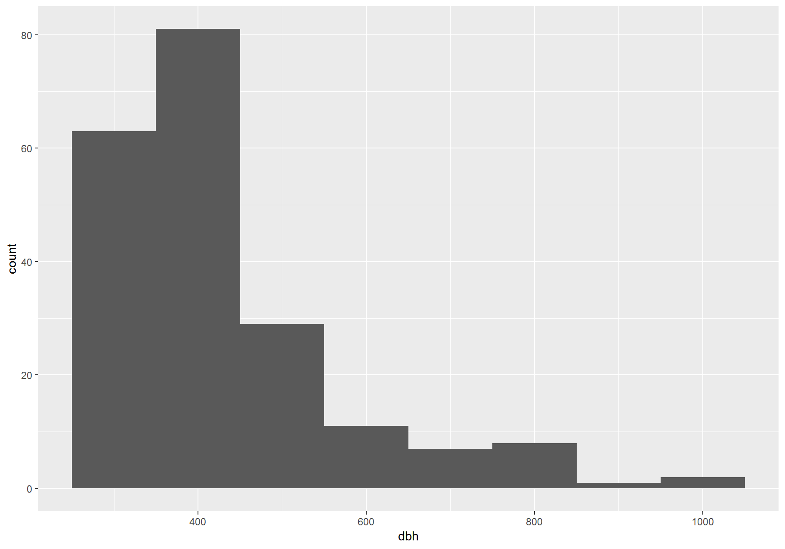
Unusual values
In this section we will work with the entire stem data set.
Outliers are observations that are unusual; data points that don’t seem to fit the pattern. Sometimes outliers are data entry errors; other times outliers suggest important new science. When you have a lot of data, outliers are sometimes difficult to see in a histogram.
For example, take the distribution of the dbh variable of the stem data set. Notice how wide are the limits of the x-axis.
p <- ggplot(stem, aes(dbh)) +
geom_histogram(binwidth = useful_binwidth)
p
#> Warning: Removed 2700 rows containing non-finite values (stat_bin).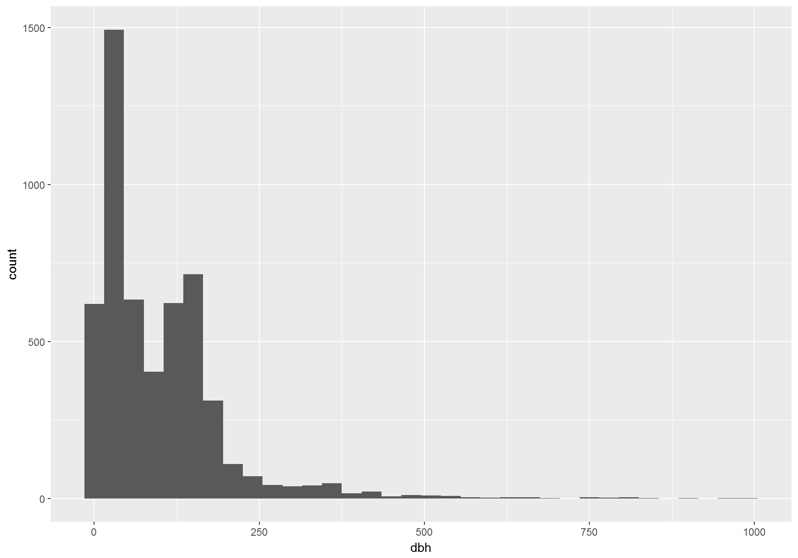
There are so many observations in the common bins that the rare bins are so short that you can barely see them . To make the unusual values more noticeable, we can zoom into smaller values of the y-axis with coord_cartesian().
p + coord_cartesian(ylim = c(0, 15))
#> Warning: Removed 2700 rows containing non-finite values (stat_bin).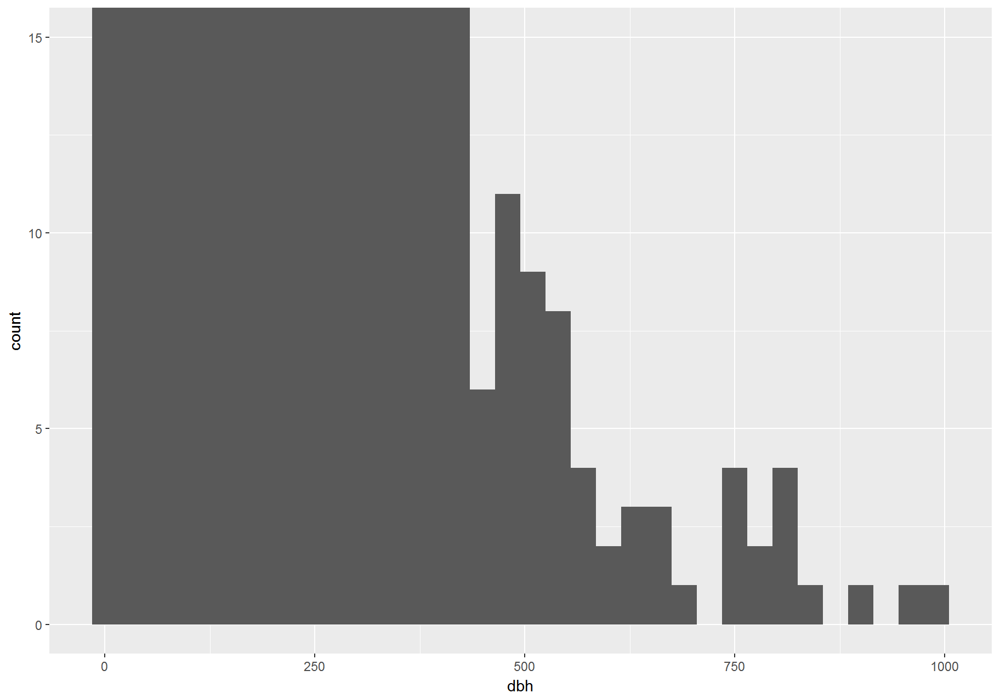
coord_cartesian() also has an xlim argument for when you need to zoom into the x-axis. ggplot2 also has xlim() and ylim() functions that work slightly differently: they throw away the data outside the limits.
This allows us to see that dbh values over ~625 are unusual and may be outliers. We can pluck them out with dplyr::filter() and select a subset of informative variables:
treshold <- 625
unusual <- stem %>%
filter(dbh > treshold ) %>%
select(stemID, ExactDate, status, gx, gy, dbh) %>%
arrange(dbh)
unusual
#> # A tibble: 19 x 6
#> stemID ExactDate status gx gy dbh
#> <int> <dbl> <chr> <dbl> <dbl> <dbl>
#> 1 80141 7762 A 138. 163. 642
#> 2 34692 11754 A 221. 445. 661
#> 3 34692 15405 A 221. 445. 661
#> 4 34692 13537 A 221. 445. 666
#> 5 34692 17050 A 221. 445. 676
#> 6 34692 9709 A 221. 445. 738
#> 7 30562 9570 A 118. 343. 740
#> 8 30562 13431 A 118. 343. 740
#> 9 30562 11592 A 118. 343. 751
#> 10 30562 15315 A 118. 343. 777
#> 11 30562 7925 A 118. 343. 787
#> 12 32585 8021 A 225. 397. 800
#> 13 32585 9653 A 225. 397. 809
#> 14 30562 16981 A 118. 343. 812
#> 15 34692 8045 A 221. 445. 823
#> 16 32585 11659 A 225. 397. 845
#> 17 32585 13458 A 225. 397. 903
#> 18 32585 15379 A 225. 397. 955
#> 19 32585 17017 A 225. 397. 992You could plot the unusual stems to see where they are located.
ggplot(stem, aes(gx, gy)) +
# `alpha` controls opacity
geom_point(alpha = 1/10) +
# highlight unusual stems
geom_point(data = unusual, colour = "red", size = 3)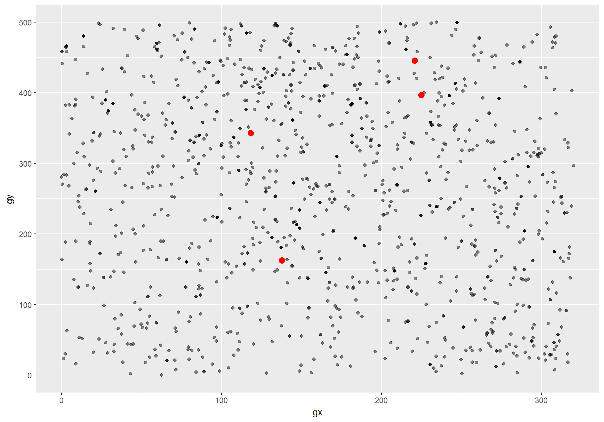
It’s good practice to repeat your analysis with and without the outliers. If they have minimal effect on the results, and you can’t figure out why they’re there, it’s reasonable to replace them with missing values, and move on. However, if they have a substantial effect on your results, you shouldn’t drop them without justification. You’ll need to figure out what caused them (e.g. a data entry error) and disclose that you removed them in your write-up.
Missing Values
If you’ve encountered unusual values in your data set, and simply want to move on to the rest of your analysis, you have two options.
- Drop the entire row with the strange values:
are_usual <- !stem$stemID %in% unusual$stemID
usual <- filter(stem, are_usual)
# Confirm data set of usual stems has less rows than full data set.
nrow(stem)
#> [1] 7944
nrow(usual)
#> [1] 7920I don’t recommend this option because just because one measurement is invalid, doesn’t mean all the measurements are. Additionally, if you have low quality data, by time that you’ve applied this approach to every variable you might find that you don’t have any data left!
- Instead, I recommend replacing the unusual values with missing values. The easiest way to do this is to use
dplyr::mutate()to replace the variable with a modified copy. You can use theifelse()function to replace unusual values withNA:
are_unusual <- !are_usual
with_unusual_made_NA <- stem %>%
mutate(dbh = ifelse(are_unusual, NA_real_, dbh))ifelse() has three arguments. The first argument test should be a logical vector. The result will contain the value of the second argument, yes, when test is TRUE, and the value of the third argument, no, when it is FALSE.
# Confirm no rows have been removed,
nrow(stem)
#> [1] 7944
nrow(with_unusual_made_NA)
#> [1] 7944
# but dbh of unusual stems is NA
unusual_only <- with_unusual_made_NA %>%
filter(are_unusual) %>%
select(dbh, stemID)
unusual_only
#> # A tibble: 24 x 2
#> dbh stemID
#> <dbl> <int>
#> 1 NA 30562
#> 2 NA 32585
#> 3 NA 34692
#> 4 NA 80141
#> 5 NA 30562
#> 6 NA 32585
#> 7 NA 34692
#> 8 NA 80141
#> 9 NA 30562
#> 10 NA 32585
#> # ... with 14 more rowsAlternatively to ifelse(), use dplyr::case_when(). case_when() is particularly useful inside mutate() when you want to create a new variable that relies on a complex combination of existing variables.
It’s not obvious where you should plot missing values in a plot, so ggplot2 doesn’t include them, but it does warn that they’ve been removed (left plot below). To suppress that warning, set na.rm = TRUE (right plot below).
# Left: don't remove NAs and get a warning on the console
ggplot(unusual_only, aes(dbh)) +
geom_histogram(binwidth = useful_binwidth) +
labs(title = "Expect empty plot but get a warning")
#> Warning: Removed 24 rows containing non-finite values (stat_bin).
# Right: NAs explicitely removed in geom_histogram(), so no warning
ggplot(unusual_only, aes(dbh)) +
geom_histogram(binwidth = useful_binwidth, na.rm = TRUE) +
labs(title = "Expect empty plot but no warning") 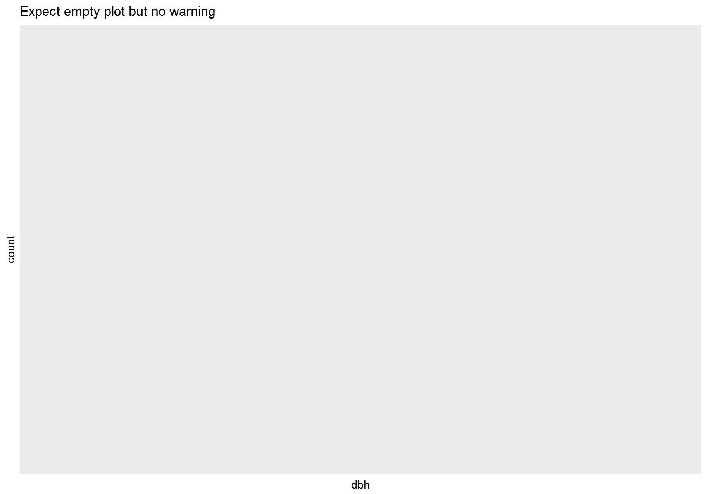
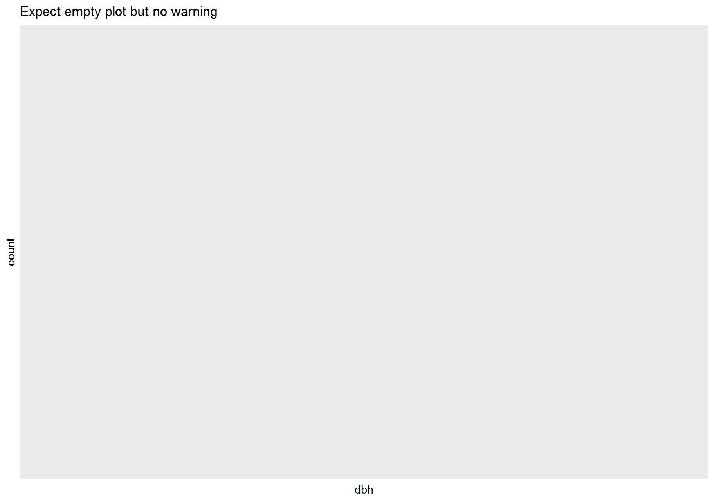
Other times you want to understand what makes observations with missing values different to observations with recorded values.
For example, you might want to compare the status for stems with missing and non-missing values of dbh. You can do this by making a new variable with is.na().
missing_dbh <- stem %>%
mutate(missing = is.na(dbh))
ggplot(missing_dbh) +
geom_bar(aes(status, fill = missing))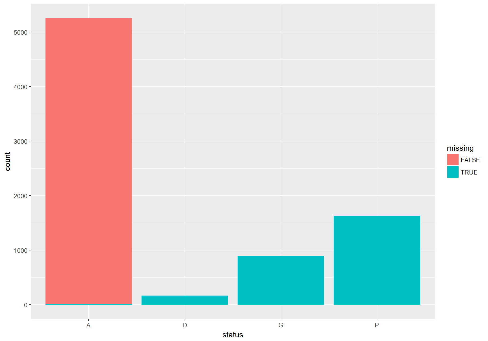
Covariation
If variation describes the behavior within a variable, covariation describes the behavior between variables. Covariation is the tendency for the values of two or more variables to vary together in a related way. The best way to spot covariation is to visualize the relationship between two or more variables. How you do that should again depend on the type of variables involved.
A categorical and continuous variable
It’s common to want to explore the distribution of a continuous variable broken down by a categorical variable. The default appearance of geom_freqpoly() is not that useful for that sort of comparison because the height is given by the count. That means if one of the groups is much smaller than the others, it’s hard to see the differences in shape. For example, let’s explore how stem diameter (dbh) varies with species (sp):
# The data set has too many species; choosing just a few for clarity
few_sp <- unique(stem$sp)[1:5]
data_few_sp <- filter(stem, sp %in% few_sp)
ggplot(data_few_sp, aes(dbh)) +
geom_freqpoly(aes(color = sp))
#> `stat_bin()` using `bins = 30`. Pick better value with `binwidth`.
#> Warning: Removed 1032 rows containing non-finite values (stat_bin).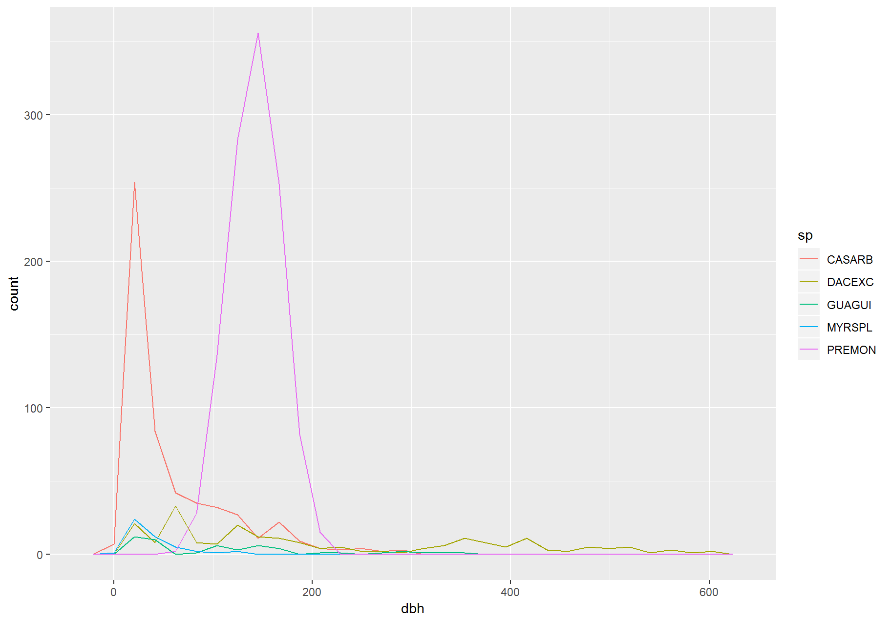
It’s hard to see the difference in distribution because the overall counts differ so much:
ggplot(data_few_sp) +
# ordering `sp` from high to low frequency with forcats::fct_infreq()
geom_bar(mapping = aes(x = fct_infreq(sp)))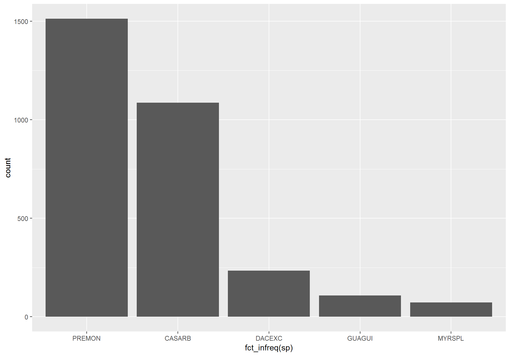
To make the comparison easier we need to swap what is displayed on the y-axis. Instead of displaying count, we’ll display density, which is the count standardized so that the area under each frequency polygon is one.
ggplot(data_few_sp, aes(x= dbh, y = ..density..)) +
geom_freqpoly(aes(color = sp))
#> `stat_bin()` using `bins = 30`. Pick better value with `binwidth`.
#> Warning: Removed 1032 rows containing non-finite values (stat_bin).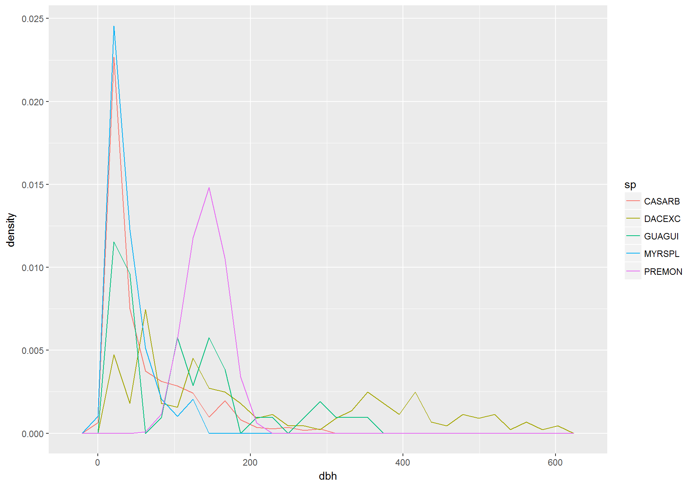
Another alternative to display the distribution of a continuous variable broken down by a categorical variable is the boxplot. A boxplot is a type of visual shorthand for a distribution of values that is popular among statisticians. Each boxplot consists of:
A box that stretches from the 25th percentile of the distribution to the 75th percentile, a distance known as the interquartile range (IQR). In the middle of the box is a line that displays the median, i.e. 50th percentile, of the distribution. These three lines give you a sense of the spread of the distribution and whether or not the distribution is symmetric about the median or skewed to one side.
Visual points that display observations that fall more than 1.5 times the IQR from either edge of the box. These outlying points are unusual so are plotted individually.
A line (or whisker) that extends from each end of the box and goes to the farthest non-outlier point in the distribution.

Let’s take a look at the distribution of stem diameter (dbh) by species (sp) using geom_boxplot():
ggplot(data_few_sp, aes(sp, dbh)) +
geom_boxplot()
#> Warning: Removed 1032 rows containing non-finite values (stat_boxplot).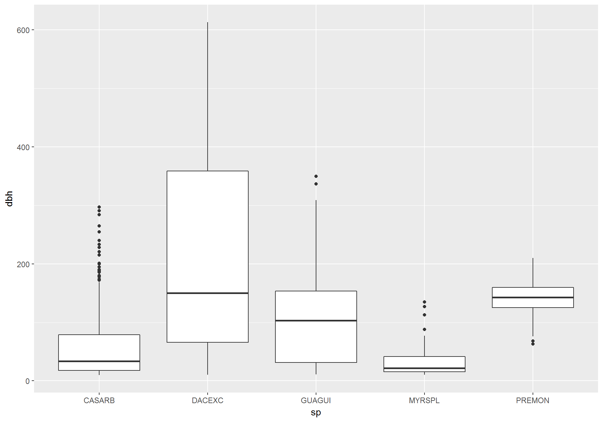
We see much less information about the distribution, but the boxplots are much more compact so we can more easily compare them (and fit more on one plot).
Above we ordered the variable sp by its frequency. But now, to make the trend easier to see, we can reorder sp based on the median value of dbh. One way to do that is with reorder().
data_few_sp <- data_few_sp %>%
mutate(sp = reorder(sp, dbh, FUN = median, na.rm = TRUE))
ggplot(data_few_sp, aes(sp, dbh)) +
geom_boxplot()
#> Warning: Removed 1032 rows containing non-finite values (stat_boxplot).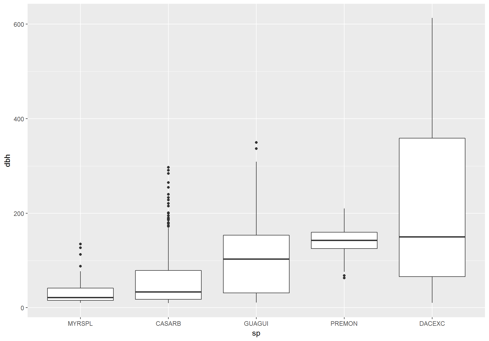
If you have long variable names, geom_boxplot() will work better if you flip it 90°. You can do that with coord_flip() (left plot below), or with ggstance::geom_boxploth() and swapping x and y mappings (right plot below):
# Remember to install with install.packages("ggstance")
library(ggstance)
#>
#> Attaching package: 'ggstance'
#> The following objects are masked from 'package:ggplot2':
#>
#> geom_errorbarh, GeomErrorbarh
# Left
ggplot2::last_plot() +
coord_flip()
#> Warning: Removed 1032 rows containing non-finite values (stat_boxplot).
# Right
ggplot(data_few_sp) +
ggstance::geom_boxploth(aes(x = dbh, y = sp)) # swap x, y; compare to above
#> Warning: Removed 1032 rows containing non-finite values (stat_boxploth).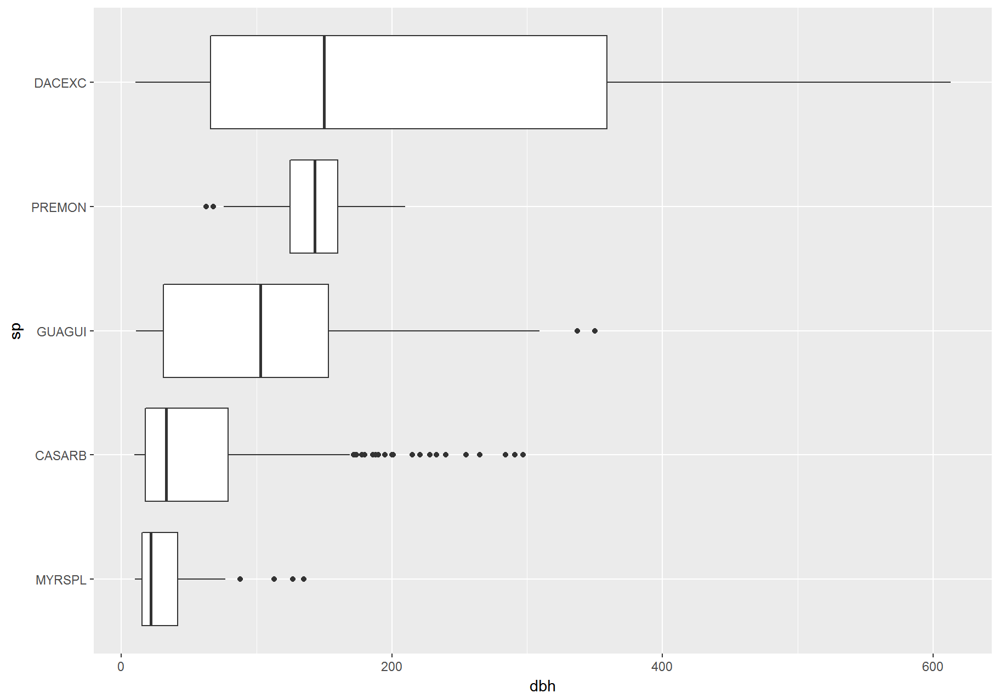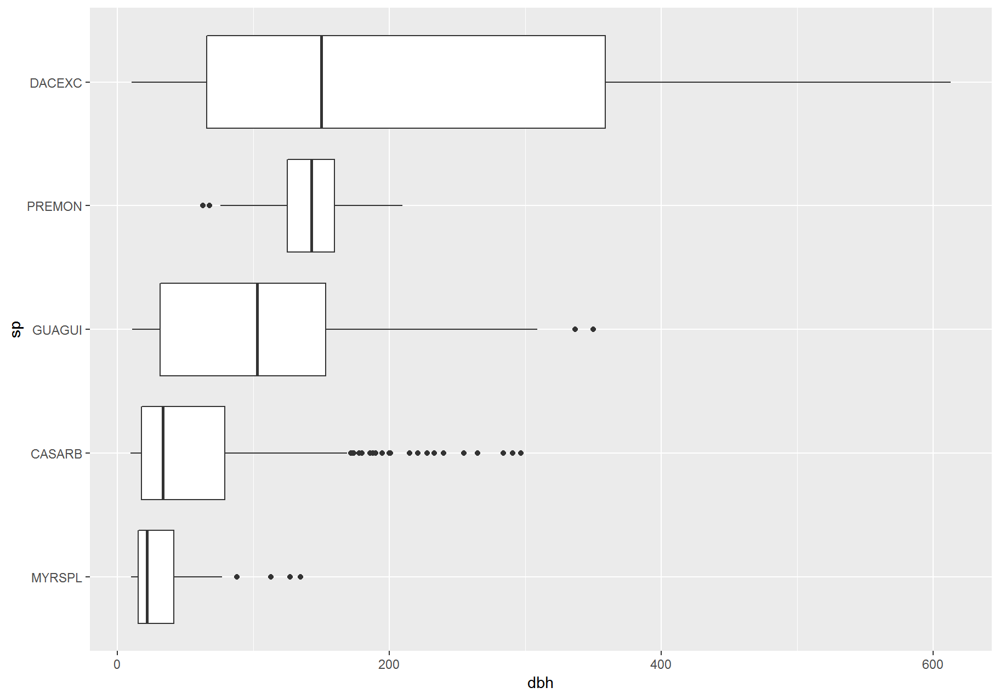
Alternatives
One problem with boxplots is that they were developed in an era of much smaller data sets and tend to display a prohibitively large number of “outlying values”. One approach to remedy this problem is the letter-value plot.
# Remember to install with install.packages("lvplot")
library(lvplot)
ggplot(data_few_sp, aes(sp, dbh)) +
lvplot::geom_lv()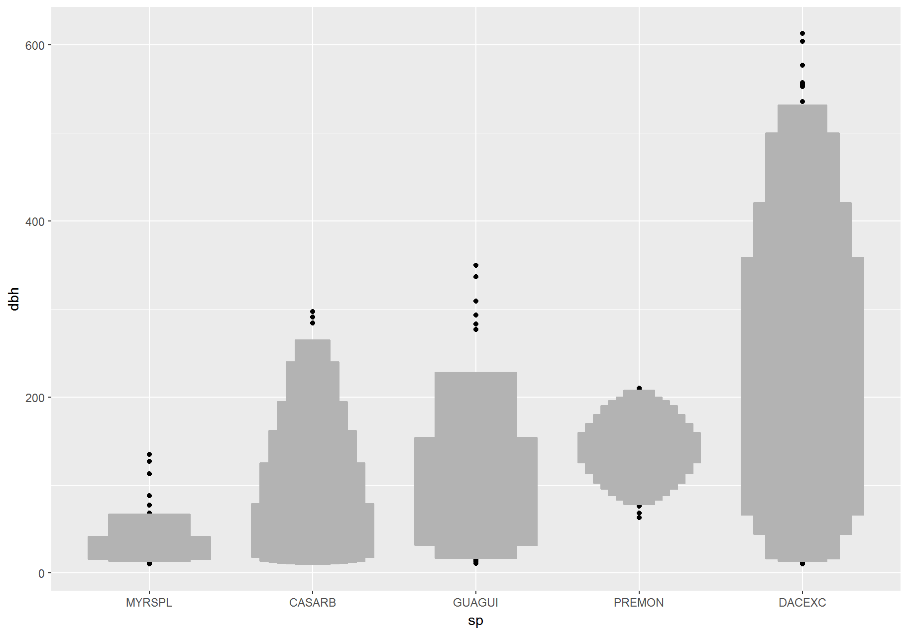
Compare and contrast geom_violin() with a faceted geom_histogram(), or a colored geom_freqpoly() (). What are the pros and cons of each method?
ggplot(data_few_sp, aes(sp, dbh)) +
geom_violin()
#> Warning: Removed 1032 rows containing non-finite values (stat_ydensity).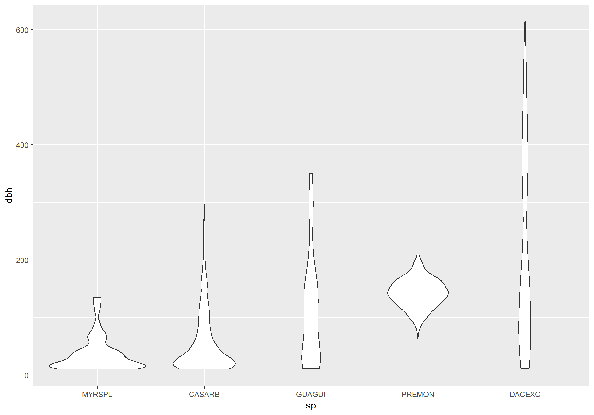
ggplot(data_few_sp, aes(dbh)) +
geom_histogram() +
facet_wrap(~sp)
#> `stat_bin()` using `bins = 30`. Pick better value with `binwidth`.
#> Warning: Removed 1032 rows containing non-finite values (stat_bin).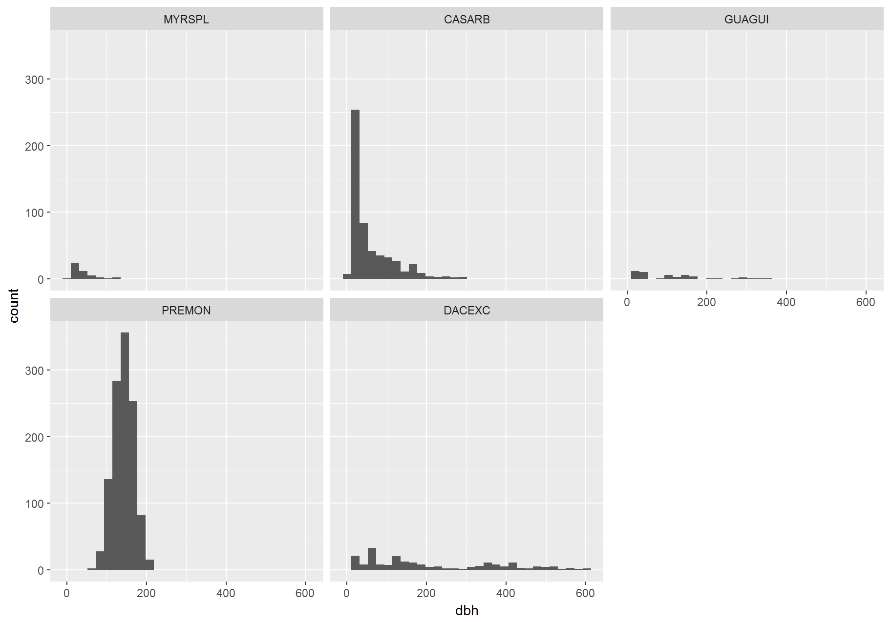
If you have a small data set, it’s sometimes useful to use geom_jitter() to see the relationship between a continuous and categorical variable. The ggbeeswarm package provides a number of methods similar to geom_jitter().
# Remember to install with install.packages("ggbeeswarm")
library(ggbeeswarm)
small_dataset <- data_few_sp %>%
group_by(sp) %>%
sample_n(50)
p <- ggplot(small_dataset, aes(sp, dbh))
p + geom_point()
#> Warning: Removed 84 rows containing missing values (geom_point).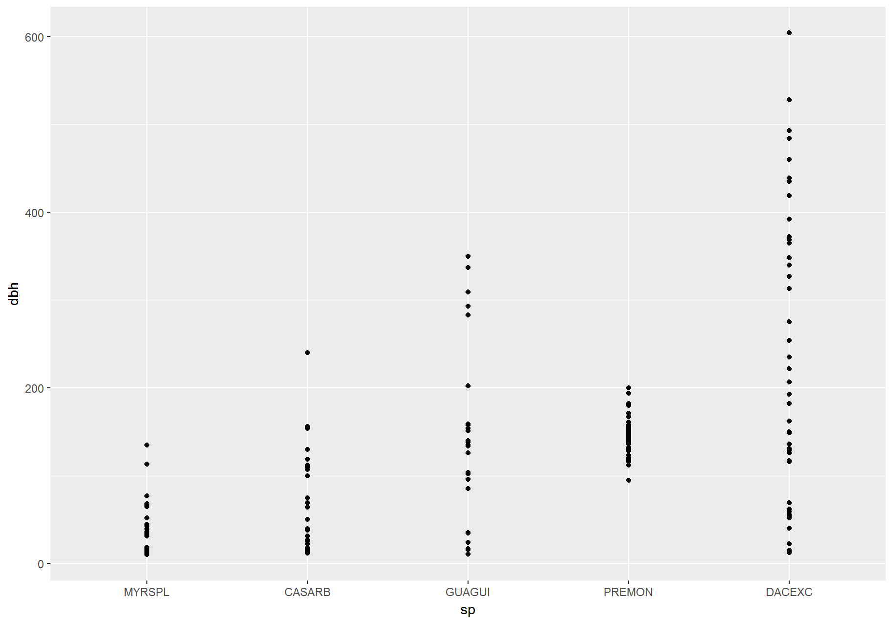
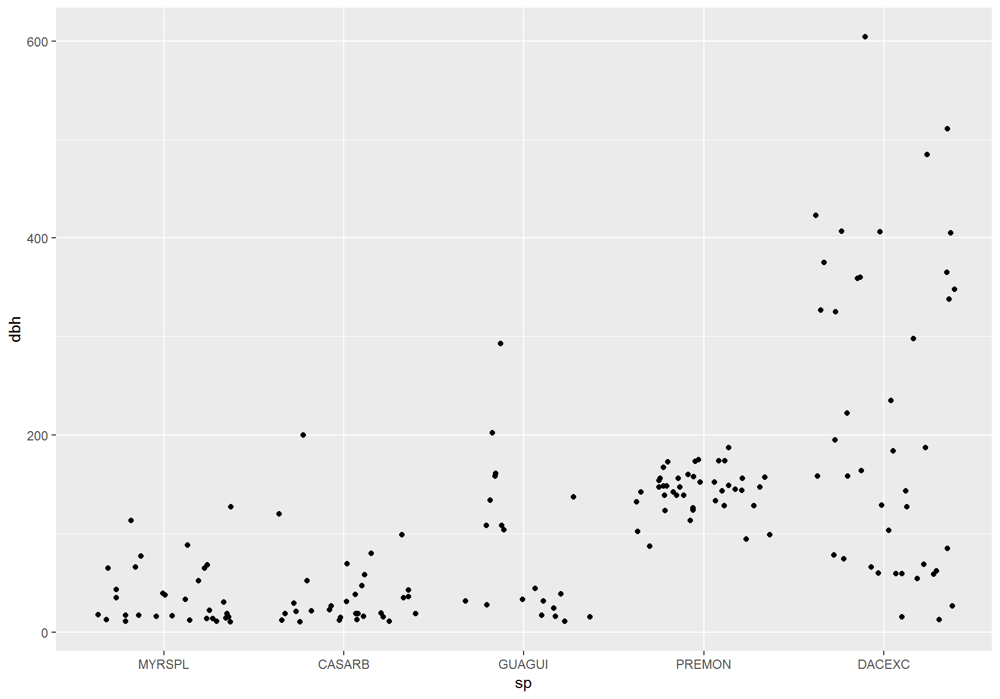
p + ggbeeswarm::geom_quasirandom()
#> Warning: Removed 84 rows containing missing values (position_quasirandom).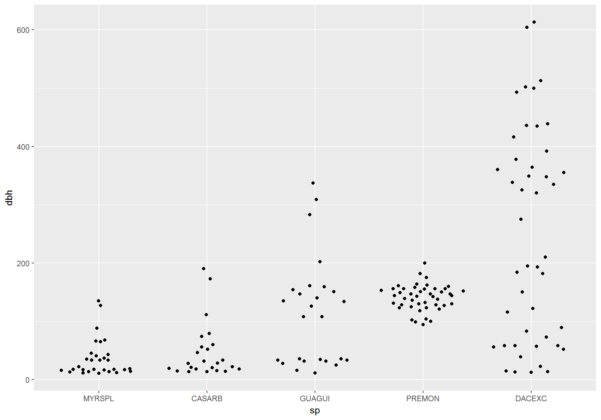
Two categorical variables
To visualize the covariation between categorical variables, you’ll need to count the number of observations for each combination. One way to do that is to rely on the built-in geom_count(). The size of each circle in the plot displays how many observations occurred at each combination of values (left plot below). Covariation will appear as a strong correlation between specific x values and specific y values.
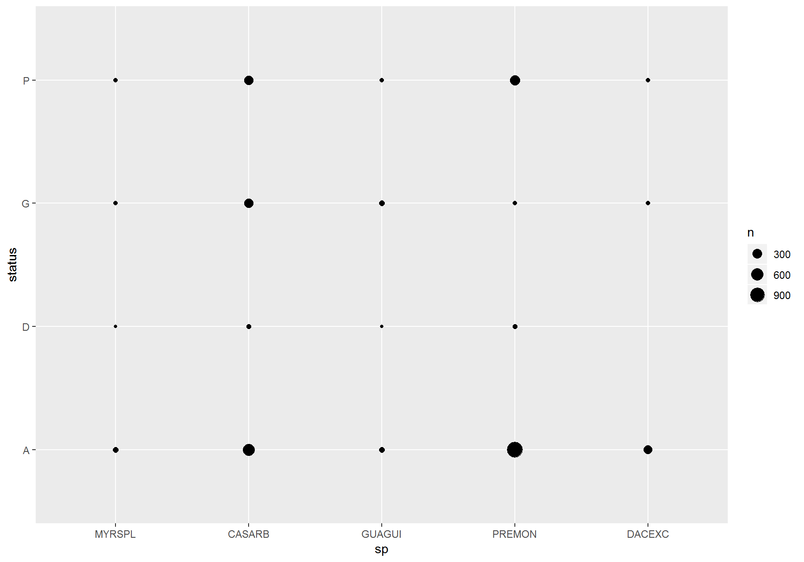
To more clearly show the distribution of status within sp (or sp within status) you can map bubble size to a proportion calculated over sp (or over status):
# Proportion; columns sum to 1.
ggplot(data_few_sp, aes(x = sp, y = status)) +
geom_count(aes(size = ..prop.., group = sp)) +
scale_size_area(max_size = 10)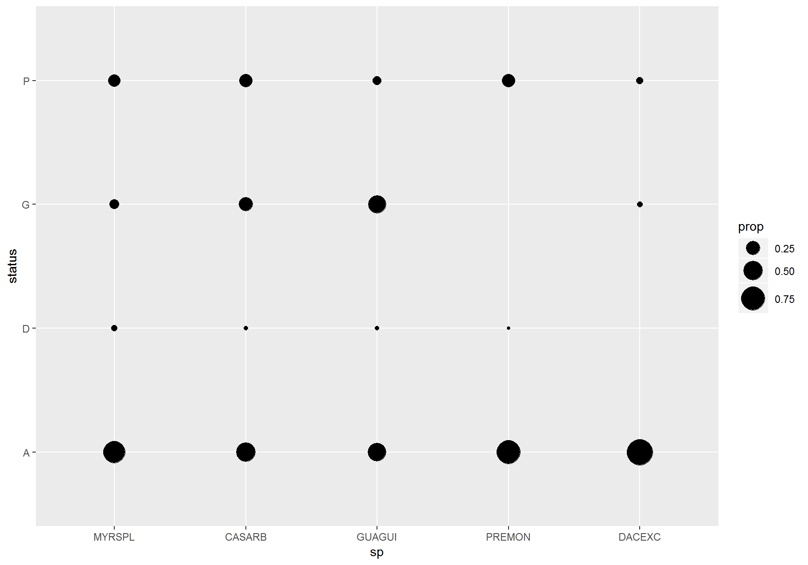
few_spp_n <- data_few_sp %>%
count(sp, status)
few_spp_n
#> # A tibble: 19 x 3
#> sp status n
#> <fct> <chr> <int>
#> 1 MYRSPL A 47
#> 2 MYRSPL D 3
#> 3 MYRSPL G 8
#> 4 MYRSPL P 14
#> 5 CASARB A 541
#> 6 CASARB D 18
#> 7 CASARB G 279
#> 8 CASARB P 248
#> 9 GUAGUI A 50
#> 10 GUAGUI D 2
#> 11 GUAGUI G 46
#> 12 GUAGUI P 10
#> 13 PREMON A 1160
#> 14 PREMON D 18
#> 15 PREMON G 8
#> 16 PREMON P 350
#> 17 DACEXC A 213
#> 18 DACEXC G 8
#> 19 DACEXC P 13Then visualize with geom_tile() and the fill aesthetic:
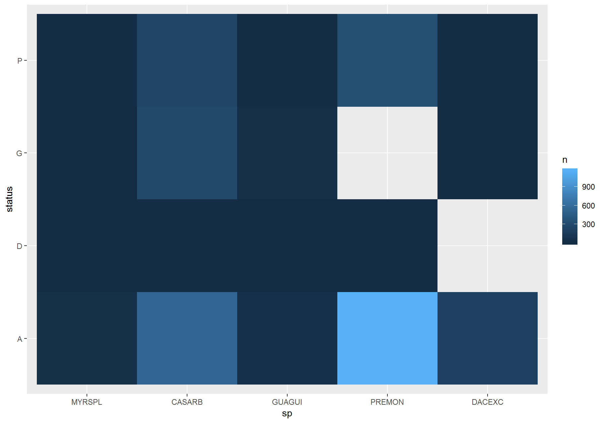
Two continuous variables
You’ve already seen one great way to visualize the covariation between two continuous variables: draw a scatterplot with geom_point(). You can see covariation as a pattern in the points. For example, we can estimate the basal area of each stem as a function of dbh with the equation ba = 1 / 4 * pi * (dbh)^2. I’ll add some error to make the pattern a little more interesting.
error <- rnorm(length(stem$dbh))
stem <- stem %>%
mutate(ba = (1 / 4 * (dbh)^2) + error)
p <- ggplot(stem, aes(dbh, ba))
p + geom_point()
#> Warning: Removed 2700 rows containing missing values (geom_point).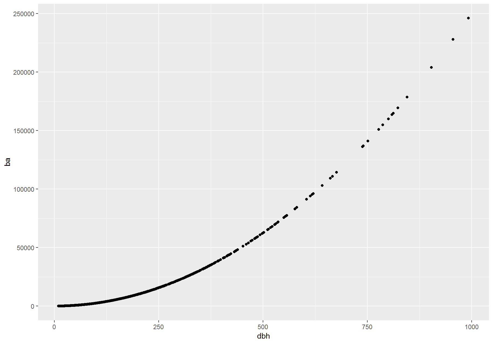
Scatterplots become less useful as the size of your data set grows, because points begin to overplot, and pile up into areas of uniform black (as above). You’ve already seen one way to fix the problem: using the alpha aesthetic to add transparency.
p + geom_point(alpha = 1 / 25)
#> Warning: Removed 2700 rows containing missing values (geom_point).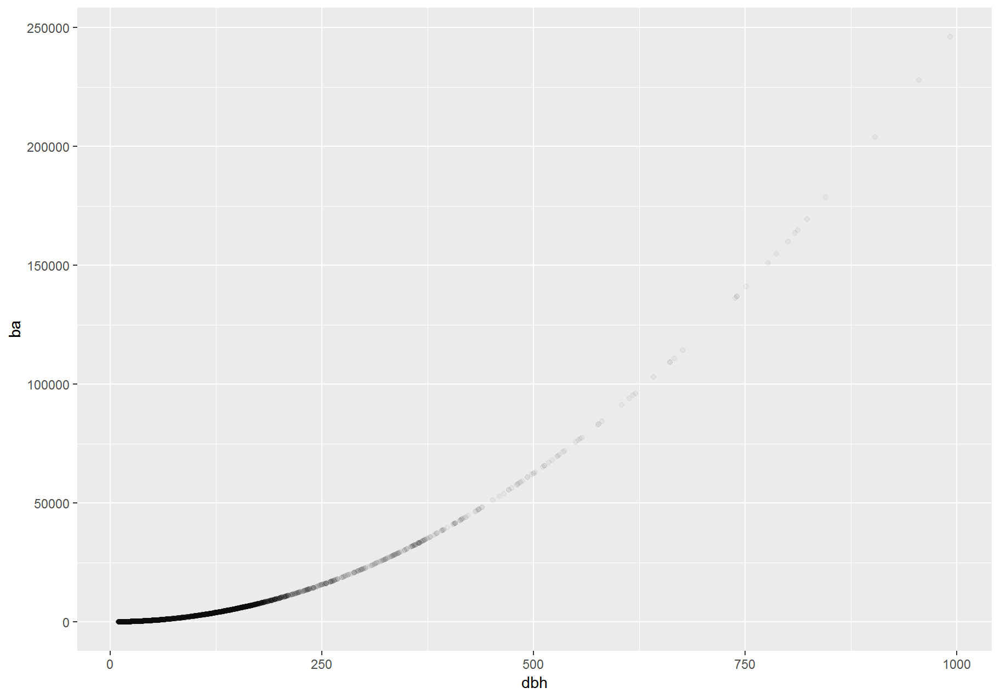
But using transparency can be challenging for very large data sets. Another solution is to use bin. Previously you used geom_histogram() and geom_freqpoly() to bin in one dimension. Now you’ll learn how to use geom_bin2d() and geom_hex() to bin in two dimensions.
geom_bin2d() and geom_hex() divide the coordinate plane into 2d bins and then use a fill color to display how many points fall into each bin. geom_bin2d() creates rectangular bins. geom_hex() creates hexagonal bins. You will need to install the hexbin package to use geom_hex().
# Remember to install with install.packages("hexbin")
# Left
p + geom_bin2d()
#> Warning: Removed 2700 rows containing non-finite values (stat_bin2d).
# Right
p + geom_hex()
#> Warning: Removed 2700 rows containing non-finite values (stat_binhex).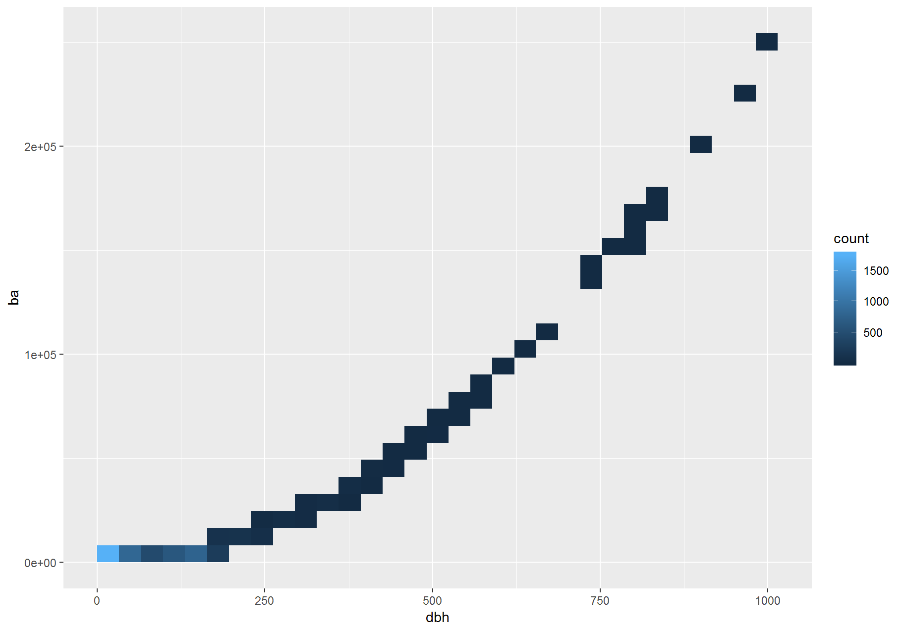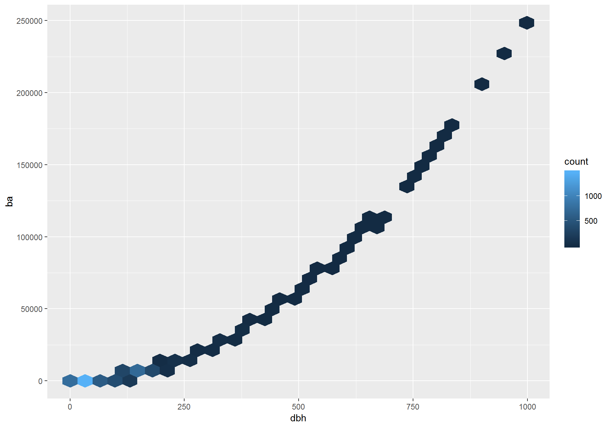
Another option is to bin one continuous variable so it acts like a categorical variable. Then you can use one of the techniques for visualizing the combination of a categorical and a continuous variable that you learned about. For example, you could bin dbh and then for each group, display a boxplot:
p <- ggplot(stem, aes(dbh, ba))
p + geom_boxplot(aes(group = cut_width(dbh, useful_binwidth)))
#> Warning: Removed 2700 rows containing non-finite values (stat_boxplot).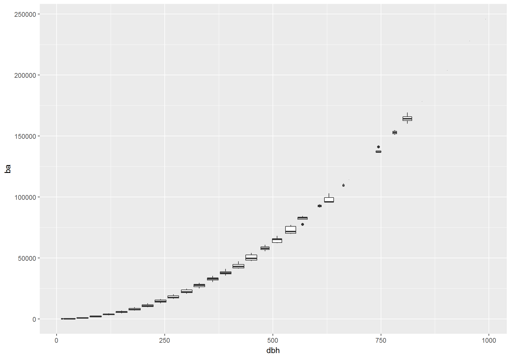
cut_width(x, width), as used above, divides x into bins of width width. By default, boxplots look roughly the same (apart from number of outliers) regardless of how many observations there are, so it’s difficult to tell that each boxplot summarizes a different number of points. One way to show that is to make the width of the boxplot proportional to the number of points with varwidth = TRUE.
Another approach is to display approximately the same number of points in each bin. That’s the job of cut_number():
p + geom_boxplot(aes(group = cut_number(dbh, 20)))
#> Warning: Removed 2700 rows containing non-finite values (stat_boxplot).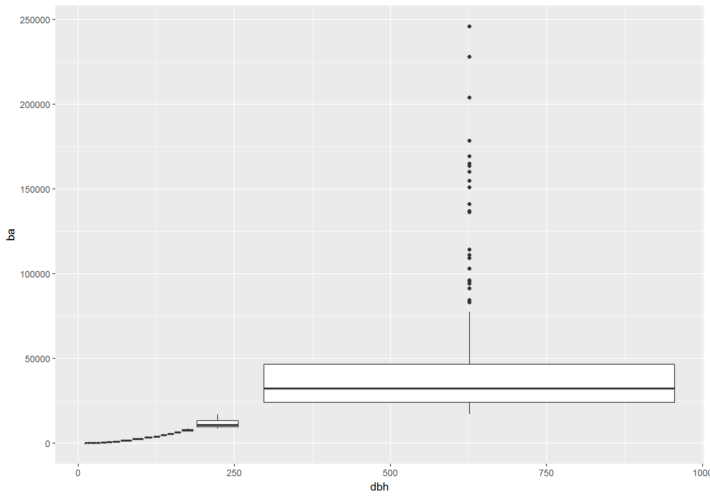
Patterns and models
Patterns in your data provide clues about relationships. If a systematic relationship exists between two variables it will appear as a pattern in the data. If you spot a pattern, ask yourself:
- Could this pattern be due to coincidence (i.e. random chance)?
- How can you describe the relationship implied by the pattern?
- How strong is the relationship implied by the pattern?
- What other variables might affect the relationship?
- Does the relationship change if you look at individual subgroups of the data?
Above we learned that a scatterplot of stem diameter (dbh) versus basal area (ba) shows a pattern: larger stem diameters are associated with larger basal area.
Patterns provide one of the most useful tools for data scientists because they reveal covariation. If you think of variation as a phenomenon that creates uncertainty, covariation is a phenomenon that reduces it. If two variables co-vary, you can use the values of one variable to make better predictions about the values of the second. If the covariation is due to a causal relationship (a special case), then you can use the value of one variable to control the value of the second.
Models are a tool for extracting patterns out of data. For example, consider the stem data; dbh and ba are tightly related. It’s possible to use a model to remove the very strong relationship between dbh and ba so we can explore the subtleties that remain. The following code fits a model that predicts ba from dbh and then computes the residuals (the difference between the predicted value and the actual value). The residuals give us a view of the basal area of a stem, once the effect of dbh has been removed.
library(modelr)
mod <- lm(log(ba) ~ log(dbh), data = stem)
resid_added <- stem %>%
add_residuals(mod) %>%
mutate(resid = exp(resid))
ggplot(data = resid_added, aes(x = dbh, y = resid)) +
geom_point()
#> Warning: Removed 2700 rows containing missing values (geom_point).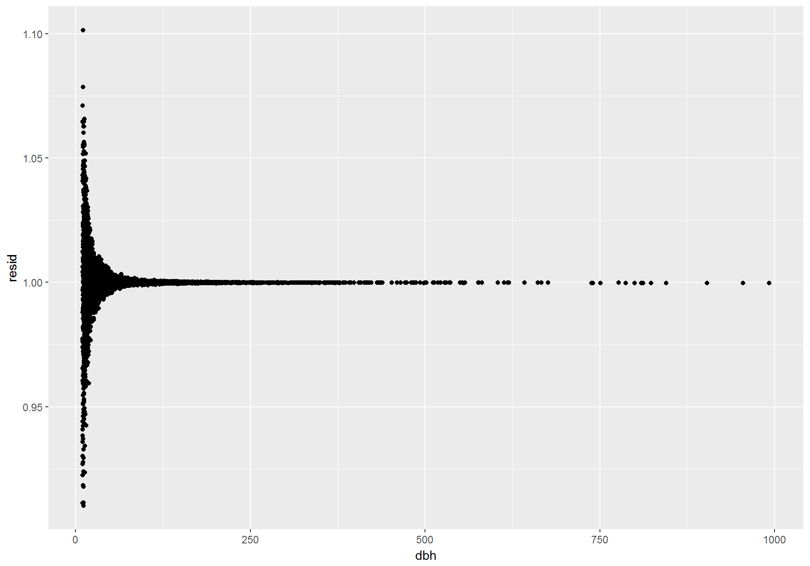
There is no pattern left. This is unsurprising because we created ba as a precise function of dbh plus a random error – once we removed the pattern due to dbh all that remains is noise.